Stima WiFi V2¶

Elenco materiali¶
connettori (quando necessari)
NOTA BENE
In particolare il sensore Honeywell HPMA richiede una alimentazione a 5V stabilizzata e molto precisa
Alimentazione per distanze fino a circa 50m. dall'alimentazione di rete a 220V:
cavo bipolare della lunghezza opportuna
Sensore polveri Sensirion SPS30¶
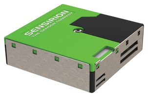
sps30 overview¶
in alternativa¶
in alternativa¶
in alternativa¶
Sensore temperatura e umidità¶
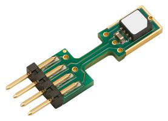
in alternativa¶
temperatura 0.2C accuratezza¶
temperatura 0.5C accuratezza e umidità¶
Sensore di CO2¶
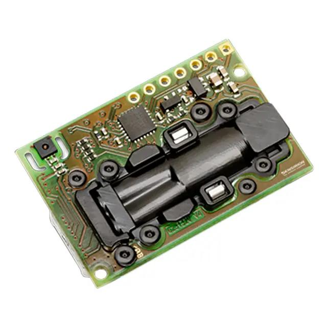
scd30 overview¶
Configurazioni sul server¶
Registrazione¶
Registrasi o fare 1 login sul server.
Configurazione stazione¶
Registrare una nuova stazione sul server; dopo aver selezionato le coordinate utilizzando l'indirizzo o selezionandole dalla mappa inserire il nome stazione ( nome consigliato come predefinito "stimawifi") e il modello stazione che sarà
"airquality_sps_sht_scd" se sono collegati i sensori Sensirion delle polveri SPS30, temperatura e umidità SHT85 , sensore di CO2 SCD30
"airquality_sps_sht" se sono collegati i sensori Sensirion delle polveri SPS30, temperatura e umidità SHT85
"airquality_sps" se è collegato solo il sensori Sensirion delle polveri SPS30
"airquality_sds" se è collegato solo il sensore delle polveri SDS011.
"airquality_hpm" se è collegato solo il sensore delle polveri Honeywell HPM
"airquality_pms" se è collegato solo il sensore delle polveri Plantower pms5003
"stima_thd" se sono collegati il sensore delle polveri Honeywell HPM e il modulo stima_th
"stima_thdm" se sono collegati il sensore delle polveri Honeywell HPM, il modulo stima_th, il modulo stima_gas
Attivazione stazione¶
Accendere la stazione collegandola tramite l'apposito alimentatore a una alimentazione USB.
Se si ha il display¶
Tenendo premuto il pulsante A premere il pulsante Reset. Dovranno apparire le seguenti scritte:
Clean FSReset wifi configurationCon un PC o uno smathphone collegarsi al WIFI con ssed "STIMA-config" e password "bellastima" come indicato sul display.
Una volta attivata la connessione dovrà comparire una pagina di configurazione intitolata "STIMA-config".
Se questo non avviene automaticamente puntare il browser all'indirizzo http://192.168.4.1/
Selezionare la prima voce "Configure WiFi".
Selezionare dall'elenco l'ssed della rete WiFi di accesso alla rete che dovrà essere utilizzata dalla stazione e inserire nell'apposita casella la relativa password di accesso se necessaria. Nella casella "rmap user" inserire il nome utente utilizzato nella registrazione sul server e nella casella "rmap password".
Lasciare "stimawifi" come nome stazione se non è sttao precedentemente personalizzato.
premere il tasto "save" per salvare.
Se si ottiene la pagina con la scritta "Credentials Saved" la procedura ha avuto successo.
A questo punto sul display dopo la pagina con la scritta "Starting up!" e la versione del firmware dovrà comparire la scritta "WIFI OK".
Se questo non avviene rieseguire le istruzioni di questa sezione.
Se non si ha il display¶
Con un filo connettere il pin 7 a massa e premere il pulsante Reset e attendere 5 secondi prima di scollegare il filo dal pin 7.
Con un PC o uno smathphone collegarsi al WIFI con ssed "STIMA-config" e password "bellastima" come indicato sul display.
Una volta attivata la connessione dovrà comparire una pagina di configurazione intitolata "STIMA-config".
Se questo non avviene automaticamente puntare il browser all'indirizzo http://192.168.4.1/
Selezionare la prima voce "Configure WiFi".
Selezionare dall'elenco l'ssed della rete WiFi di accesso alla rete che dovrà essere utilizzata dalla stazione e inserire nell'apposita casella la relativa password di accesso se necessaria.
Nella casella "rmap user" inserire il nome utente utilizzato nella registrazione sul server e nella casella "rmap password".
Lasciare "stimawifi" come nome stazione se non è sttao precedentemente personalizzato.
premere il tasto "save" per salvare.
Se entro 60 secondi si accenderà un led blu per una decina di secondi tutto è andato a buon fine.
Se questo non avviene rieseguire le istruzioni di questa sezione.
Legenda segnalazioni tramite LED blu onboard¶
riavvio: 3 impulsi luminosi di 1 secondo
tentativo aggiornamento firmware in corso: led lampeggiante a 1Hz
risultato aggiornamento firmware:
nessun aggiornamento disponibile: 1 impulso luminosi di 1 secondo
aggiornamento firmware fallito: 2 impulsi luminosi di 1 secondo
firmware aggiornato: 3 impulsi luminosi di 1 secondo
in attesa di configurazione: led lampeggiante a 1Hz per tutto il periodo di configurazione
configurazione remota fallita: led lampeggiante a 1Hz per 5 secondi
connect MQTT fallita/errore pubblicazione: impulso medio a 1Hz per 5 secondi
sensore assente o rotto/errore comunicazione: impulso lungo a 1Hz per 5 secondi
dato mancante: un impulso luminoso di 1 secondo a 2Hz
Un corretto funzionamento della stazione viene evidenziato dal led blu che si accende per circa 5 secondi ogni 60 secondi.
Visualizzazione dei dati in tempo reale¶
Se la rete a cui accede la stazione è la stessa a cui avete collegato il dispositivo che utilizzerete per visualizzare i dati con un browser e tale rete è correttamente configurata per utilizzare i servizi Zeroconf/Bonjour sarà' possibile visualizzare i dati tramite un browser appena questi vengono rilevati dai sensori interrogando direttamente la stazione senza interessare il server. Questa funsione è consigliata ad esempio per creare pannelli informativi.
Accedere con il browser a: | Dati stazione
selezionare la propria stazione e selezionare "mostra dettagli stazione" e successivamente "dati locali in tempo reale
E possibile accedere anche direttamente alla stazione tramite l'URL: | Dati stazione
sostituendo NOMESTAZIONE con appunto il nome della vostra stazione in forma abbreviata.
Cancellazione delle configurazioni e reset alle condizioni di "fabbrica"¶
Se si ha il display¶
Tenendo premuto il pulsante A premere il pulsante Reset. Dovranno apparire le seguenti scritte:
Clean FSReset wifi configurationPotranno essere necessarie alcune decine di secondi prima che queste scritte scompaiano e si possa procedere.
Se non si ha il display¶
Con un filo connettere il pin 7 a massa e premere il pulsante Reset e attendere 5 secondi prima di scollegare il filo dal pin 7 e attendere ulteriori 60 secondi.
Assemblaggio¶
Infilare i connettori con i pin lunghi e saldarli sul modulo Wemos D1 mini. Se si dispone di un display Wemos v2 impilarlo sul modulo Wemos D1 mini. Aggiungere alla pila Wemos il DC Power Shield.
Saldare alla wemos protoboard i pin necessari a connettere tutti i sensori e aggiungerlo alla pila Wemos come da foto.
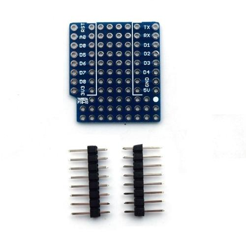
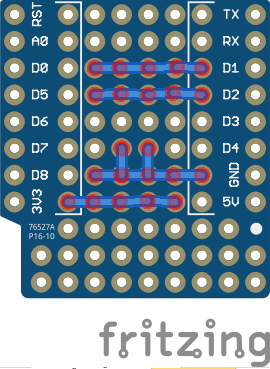
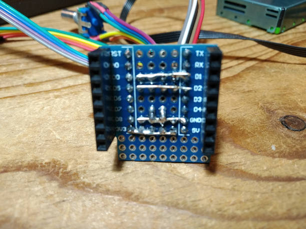
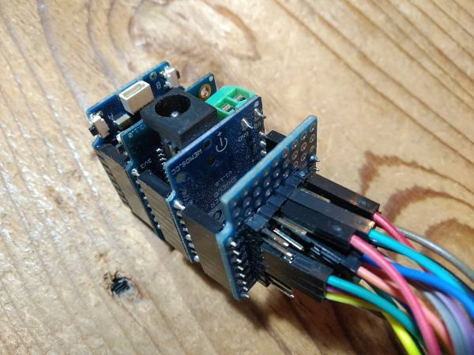
opzione display oled¶
Se si possiede la versione v2.0.0 sul circuito stampato dal lato opposto del display interrompere la piazzola sulla destra indicata con D3 (pulsante A, piazzola indicata con la freccia) e della stessa colonna di piazzole saldare quella indicata con D7. Se si possiede la versione v1.x (senza pulsanti A e B) è necessario realizzare una saldatura dove previsto (sul retro del circuito stampato rispetto al display) selezionando l'indirizzo I2C corrispondente a 0x3C.
Sensore Sensirion SPS30 per le polveri¶
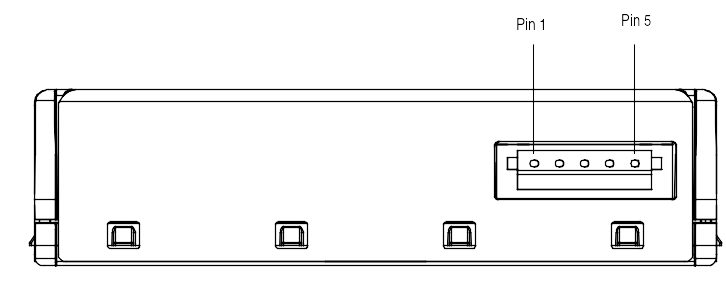
sps30 connector¶
Connettere:
Wemos D1 mini |
SPS30 |
|
|---|---|---|
5V |
<-> |
PIN 1 |
D2 |
<-> |
PIN 2 |
D1 |
<-> |
PIN 3 |
GND |
<-> |
PIN 4 |
GND |
<-> |
PIN 5 |
Sensore Sensirion SCD30 per la CO2¶
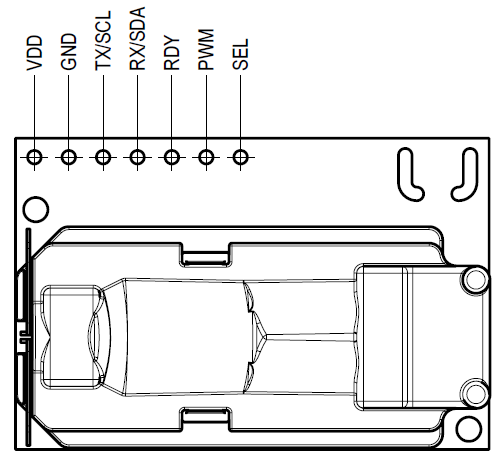
scds30 connector¶
Connettere:
Wemos D1 mini |
SCD30 |
|
|---|---|---|
5V |
<-> |
VDD |
GND |
<-> |
GND |
D1 |
<-> |
SCL |
D2 |
<-> |
SDA |
Assemblaggio del sensore all'uscita del sensore di polveri:
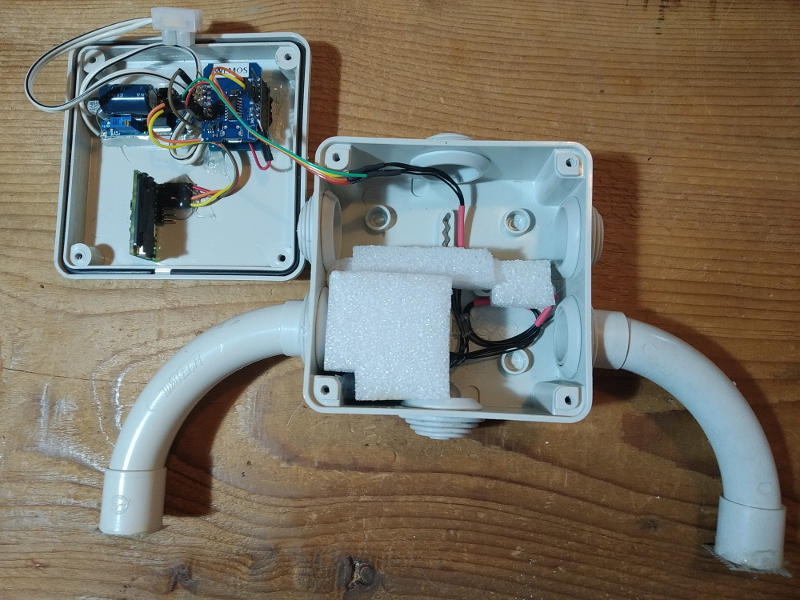
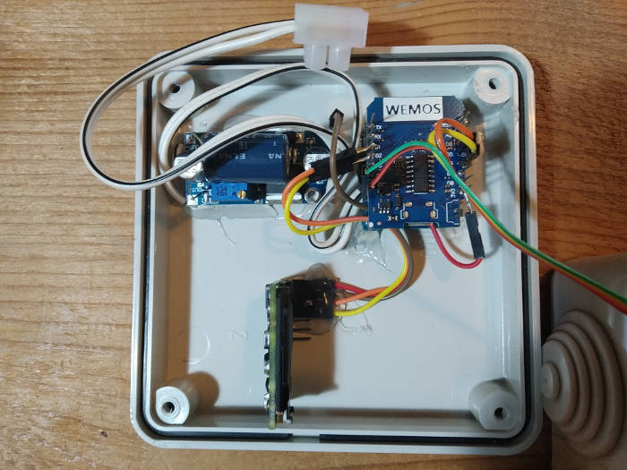
opzione sensore Plantower PMS5003 per le polveri¶
numbering pins from left to right with "plantower" stamps on the floor
Effettuare i seguenti collegamenti tra Wemos e PMS5003: Connettere:
Wemos D1 mini |
PMS5003 |
|
|---|---|---|
GND |
<-> |
PIN 2 |
5V |
<-> |
PIN 1 |
D5 |
<-> |
PIN 5 |
D6 |
<-> |
PIN 4 |
eventualmente connettere anche il PIN 6 (reset) e PIN 3 (SET) (DA FARE)
opzione sensore SDS011 per le polveri¶
Effettuare i seguenti collegamenti tra Wemos e SDS011: Connettere:
Wemos D1 mini |
SDS011 |
|
|---|---|---|
GND |
<-> |
pin 5 GND |
5V |
<-> |
pin 3 5V |
D5 |
<-> |
pin 7 TXD |
D6 |
<-> |
pin 6 RXD |
opzione sensore Honeywell HPM per le polveri¶

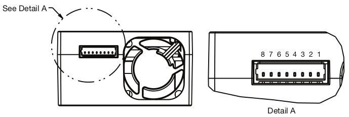
Wemos D1 mini |
Honeywell HPM |
|
|---|---|---|
GND |
<-> |
PIN 8 GND |
5V |
<-> |
PIN 2 5V |
D5 |
<-> |
PIN 6 TX |
D6 |
<-> |
PIN 7 RX |


sensore SHT85 per temperatura e umidità¶
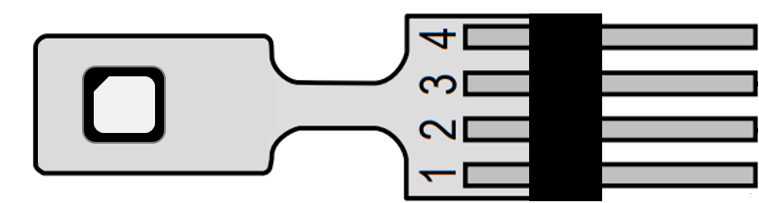
Connettere:Wemos D1 mini |
modulo Stima-th |
|
|---|---|---|
GND |
<-> |
PIN 3 |
3V3 |
<-> |
PIN 2 |
D1 |
<-> |
PIN 1 |
D2 |
<-> |
PIN 4 |
Opzione modulo Stima-th con HIH6121 e ADT7420 per temperatura e umidità¶

ponticellare (con un resistore) A1-centrale con A1-
ponticellare (con un resistore) A0-centrale con A0+
Una volta saldati i terminali dei cavi e protetti con nastro autoagglomerante è importante preservare le connessioni dalla corrosione degli agenti atmosferici e consigliamo uno strato di silicone protettivo spray del tipo Electrolube DCR200H; solo una volta asciugato lo strato di vernice protettiva rimuovere la protezione adesiva del sensore HIH
Connettere:
Wemos D1 mini |
modulo Stima-th |
|
|---|---|---|
GND |
<-> |
GND |
3V3 |
<-> |
VCC |
D1 |
<-> |
SCL |
D2 |
<-> |
SDA |

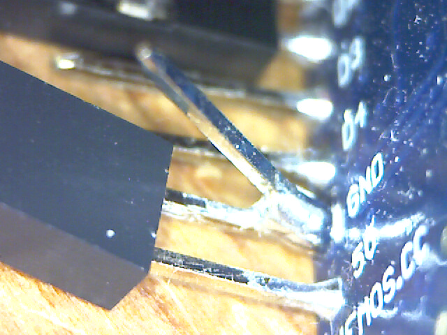
Opzione modulo Stima-i2c-sdsmics¶
vedi: http://www.raspibo.org/wiki/index.php?title=Gruppo_Meteo/HowTo#Modulo_Stima-i2c-sdsmics
Opzione per alimentazione con cavo di lunghezza superiore a 2m.¶
Tagliare il cavo dell'alimentatore e inserire una piattina bipolare con rame di diametro opportuno ovviamente della lunghezza necessaria.
Per caricare il firmware¶
Installare il driver USB2Serial¶
Windows¶
Per comunicare col Wemos c’è bisogno del driver usb2serial.
Linux¶
Nessuna installazione necessaria.
MacOS¶
Per Sierra vedere queste instruzioni che sono state testate: https://github.com/adrianmihalko/ch340g-ch34g-ch34x-mac-os-driver
Upload del firmware¶
Effettuare il download del firmware da http://rmap.cc/media/firmware/rmap_esp8266.ino.d1_mini_yhbp7E2.bin e caricarlo sul Wemos dopo averlo connesso tramite cavetto USB. Per fare questo seguire le istruzioni a: https://github.com/espressif/esptool e in particolare: https://github.com/espressif/esptool#writing-binaries-to-flash